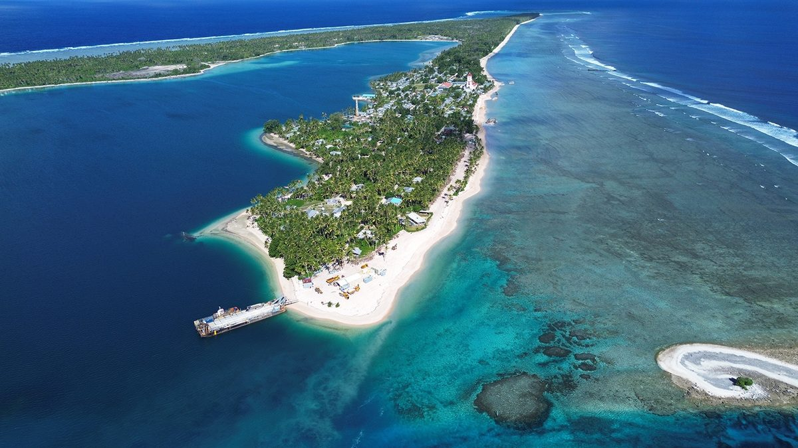
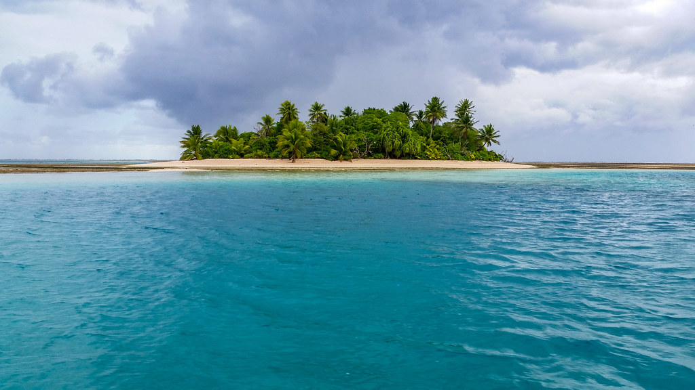

Nanumea is the northernmost atoll of Tuvalu, a small island nation in the Pacific Ocean. Located close to the equator, Nanumea is made up of a series of islets surrounding a central lagoon. Like many atolls in the Pacific, it features white sandy beaches, coconut palms, and rich marine life, which play an important role in the daily lives of its people. The island’s remote location has helped preserve its traditional way of life and strong community ties.
Nanumea has a deep cultural and historical significance within Tuvalu. Oral traditions tell of ancestral voyages and settlement stories that connect the island to other parts of Polynesia and Micronesia. The people of Nanumea maintain customs, dances, songs, and communal practices that reflect their heritage and respect for elders and tradition. The island community is close-knit, with cooperation and shared responsibility being central values.
During World War II, Nanumea gained strategic importance when Allied forces built an airstrip on the island. Remnants of this period can still be seen today and form part of the island’s modern history. Despite outside influences over time, Nanumea has retained much of its cultural identity and peaceful lifestyle.
Today, like many low-lying Pacific atolls, Nanumea faces challenges related to climate change, particularly rising sea levels and coastal erosion. Even so, the people of Nanumea continue to show resilience, preserving their traditions while adapting to environmental and social changes.
This island called Nanumea also known as Fenua o Tagata

Far out in the northern reaches of Tuvalu lies Nanumea — an atoll that does not bend easily, and does not belong to the weak.
Here, the Pacific is not a postcard. It is a force. The ocean does not politely kiss the shore; it tests it. It measures the coral, the trees, the homes, and the people. To live on Nanumea is to understand that survival is not theoretical — it is daily practice.
Land itself is narrow, shaped by coral and time. There are no mountains to hide behind, no rivers to soften the salt. When the tides rise, they rise without apology. When storms come, they come with memory — and the island remembers too. Every coconut tree leaning toward the lagoon, every weathered boat pulled high above the tide line, speaks of endurance.
Life here demands strength, but not the loud kind. Strength in Nanumea is quiet. It is rising before the sun to fish in waters that can turn in a heartbeat. It is tending pulaka pits carved carefully into the earth. It is rebuilding what wind and wave attempt to take. It is knowing the sea not as scenery, but as both provider and judge.
Community is not optional. Isolation has no mercy for those who stand alone. Families are bound by obligation, respect, and shared labor. Knowledge passes from elders to youth — how to read currents, how to lash a canoe, how to listen to the wind. These are not hobbies. They are inheritance.
Nanumea does not promise comfort. It promises reality — raw, beautiful, and unfiltered. The lagoon glows turquoise under an unforgiving sun. The night sky stretches wide and mercilessly clear. There is nowhere to hide from nature, and nowhere to hide from yourself.
To endure here is to be shaped by salt, sun, and solidarity.
Nanumea is not a land for the weak — not because it is cruel, but because it demands respect. And those who belong to it do not merely survive; they stand firm, like coral against the endless sea.